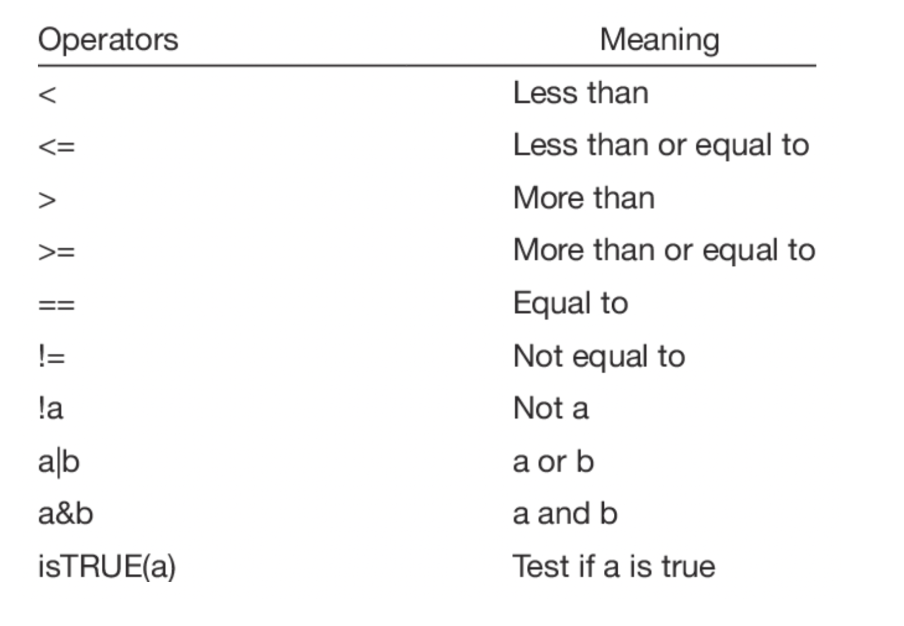

ScreenTime<-12015 R Basics
Below you will find a collection of R basic concepts.
Objects
An object is a data structure that stores a value or a set of values, along with information about the type of data and any associated attributes. Objects are usually created by assigning a value to a variable name. You can assign values by using either = or <-.
When naming objects in R use PascalCase, camelCase, snake_case or dot.case.
Vectors
A vector is a one-dimensional array that can hold elements of any data type.
Some common data types are numeric, character, logical, and complex.
Use the c() function to concatenate (combine) elements and store them in a vector.
ScreenTimeDays<-c(110,115,120,98,60)Data Frames
A data frame in R is a two-dimensional structure used for storing data in a tabular format. It is one of the most common data structures in R, similar to a spreadsheet. Columns, represent variables and rows represent observations or records. You can use the data.frame() function to create a data frame:
(data<-data.frame(x=c(1,2,3),y=c(10,9,8))) x y
1 1 10
2 2 9
3 3 8Installing Packages
In R, you can install packages using the install.packages() function. Below is the code to install the tidyverse package. The dependencies is set to true so that other packages or libraries that the package needs are also installed:
install.packages("tidyverse", dependencies = T)Load a Library
In R you must load libraries for each session because it ensures that the functions, data sets, or other resources from the library (package) are available. When you install a package, the files are stored on your computer, but they aren’t automatically loaded into memory. To load the tidyverse library use the code below:
library(tidyverse)Tibbles
A tibble is an enhanced version of a data frame in R, introduced by the tibble package, which is part of the tidyverse collection of packages. It provides a modern approach to working with tabular data, improving usability, readability, and consistency. Below we create a tibble to store data:
tibble(w=c(1,3,5,8),z=c(1,2,3,5))# A tibble: 4 × 2
w z
<dbl> <dbl>
1 1 1
2 3 2
3 5 3
4 8 5Importing Data and Preview
To import data into R you can use the read_csv() function. This command from the tidyverse package imports data as a tsibble. Below we import data on dog intelligence and preview it with the glimpse() function.
di<-read_csv("https://jagelves.github.io/Data/dog_intelligence.csv")Rows: 136 Columns: 5
── Column specification ────────────────────────────────────────────────────────
Delimiter: ","
chr (2): breed, classification
dbl (3): obey, reps_lower, reps_upper
ℹ Use `spec()` to retrieve the full column specification for this data.
ℹ Specify the column types or set `show_col_types = FALSE` to quiet this message.glimpse(di)Rows: 136
Columns: 5
$ breed <chr> "Border Collie", "Poodle", "German Shepherd", "Golden R…
$ classification <chr> "Brightest Dogs", "Brightest Dogs", "Brightest Dogs", "…
$ obey <dbl> 0.95, 0.95, 0.95, 0.95, 0.95, 0.95, 0.95, 0.95, 0.95, 0…
$ reps_lower <dbl> 1, 1, 1, 1, 1, 1, 1, 1, 1, 1, 5, 5, 5, 5, 5, 5, 5, 5, 5…
$ reps_upper <dbl> 4, 4, 4, 4, 4, 4, 4, 4, 4, 4, 15, 15, 15, 15, 15, 15, 1…You can also use the head() and tail() functions to preview the observations at the start or end of your data. For example, the command below asks for the first three observations of the di data set.
head(di,3)# A tibble: 3 × 5
breed classification obey reps_lower reps_upper
<chr> <chr> <dbl> <dbl> <dbl>
1 Border Collie Brightest Dogs 0.95 1 4
2 Poodle Brightest Dogs 0.95 1 4
3 German Shepherd Brightest Dogs 0.95 1 4Functions
In general, functions relate an input (arguments) to an output. For example, the sum() function takes as an input a vector with numeric values and returns the sum of the elements.
SleepingHours<-c(10,9,6,8)
sum(SleepingHours)[1] 33Functions also have optional arguments that are usually set to a default value. Consider the new SleepingHours data below that includes a missing value:
SleepingHours<-c(10,9,6,NA,8)If you were to try to calculate the sum of the numbers, you would get a mistake. To avoid the mistake, specify the additional argument na.rm and set it to TRUE, which is set to FALSE by default.
sum(SleepingHours, na.rm=TRUE)[1] 33The argument, removes any missing values in the data (NA) and then estimates the sum. To learn more about a function and its arguments you can use ?. For example, to learn more about the sum() function, write ?sum in the console.
Useful Base R Functions
Understanding and using Base R functions is essential for efficiently managing and analyzing data.
The
rm()function removes a specified object from the environment. Input: A object in the environment.The
ls()function lists all of the objects in the environments. Input: noneThe
rep()function repeats a number or vector a given amount of times. Input: A number or a vector.The
seq()function creates a vector with a sequence of numbers that range from a starting number to an ending number. Input: A number or a vector.The
na.omit()function removes any observations that have a missing value (NA). The resulting data frame has only complete cases. Input: A data frame (tibble) or vector.The
nrow()andncol()functions return the number of rows and columns respectively from a data frame. Input: A data frame (tibble).The
is.na()function returns a vector of True and False that specify if an entry is missing (NA) or not. Input: A data frame (tibble) or vector.The
summary()function returns a collection of descriptive statistics from a data frame (or vector). The function also returns whether there are any missing values (NA) in a variable. Input: A data frame (tibble) or vector.The
as.integer(),as.factor(),as.double(), are functions used to coerce your data into a different scale of measurement. Input: A vector or column of a data frame (tibble).The
library()function loads an R package. Input: An R library found in CRAN.
Data Types
The main data types are numeric, character, logical, date, and complex.
The numeric type includes all numbers, whether integers or real numbers with decimal points. It is the default type for numbers in R. If a number has no explicit decimal, R still treats it as numeric unless explicitly declared as an integer.
The character type is used to represent text or string data. Strings are enclosed in either single (’) or double (“) quotes.
The logical type is used for boolean values: TRUE or FALSE. It is commonly used in comparisons and conditional statements.
The date type represents calendar dates and is stored as the number of days since January 1, 1970 (known as the Unix epoch).
The complex type allows numbers that have a real and imaginary component, commonly used in advanced mathematics.
To identify the data type stored in a vector use the class() function.
class(SleepingHours)[1] "numeric"Comparison Operators
In R, comparison operators are used to compare two values or objects. They return a logical value (TRUE or FALSE) based on whether the comparison is true or false.
Here are the primary comparison operators in R:

Useful dplyr Functions
The dplyr package has a collection of functions that are useful for data manipulation and transformation. If you are interested in this package you can refer to Wickham (2017). To install, run the following command in the console install.packages("tidyverse").
- The
read_csv()function imports data from a csv file. - The
write_csv()exports a data frame in the environment as a csv file. - The
glimpse()function returns a preview of a tibble or a data frame. - The
arrange()function allows you to sort data frames in ascending order. Pair with thedesc()function to sort the data in descending order. - The
filter()function allows you to subset the rows of your data based on a condition. - The
select()function allows you to select a subset of variables from your data frame. - The
mutate()function allows you to create a new variable. - The
group_by()function allows you to group your data frame by categories present in a given variable. - The
summarise()function allows you to summarise your data, based on groupings generated by thegoup_by()function.
15.1 Exercises
Exercise 1
Use the airquality data set included in R for this problem.
- Sort the data by Temp in descending order. What is the day and month of the first observation on the sorted data?
Answer
The day and month of the first observation is August 28th.
The easiest way to sort in R is by using the dplyr package. Specifically, the arrange() function within the package. Let’s also use the desc() function to make sure that the data is sorted in descending order. We can use indexing to retrieve the first row of the sorted data set.
library(dplyr)
SortedAQ<-arrange(airquality,desc(Temp))
SortedAQ[1,] Ozone Solar.R Wind Temp Month Day
1 76 203 9.7 97 8 28- Sort the data only by Temp in descending order. Of the \(10\) hottest days, how many of them were in July?
Answer
We can use the arrange() function one more time for this question. Then we can use indexing to retrieve the top \(10\) observations.
SortedAQ2<-arrange(airquality,desc(Temp))
SortedAQ2[1:10,] Ozone Solar.R Wind Temp Month Day
1 76 203 9.7 97 8 28
2 84 237 6.3 96 8 30
3 118 225 2.3 94 8 29
4 85 188 6.3 94 8 31
5 NA 259 10.9 93 6 11
6 73 183 2.8 93 9 3
7 91 189 4.6 93 9 4
8 NA 250 9.2 92 6 12
9 97 267 6.3 92 7 8
10 97 272 5.7 92 7 9- How many missing values are there in the data set? What rows have missing values for Solar.R?
Answer
There are a total of \(44\) missing values. Ozone has \(37\) and Solar.R has \(7\). Rows \(5\), \(6\), \(11\), \(27\), \(96\), \(97\), \(98\) are missing for Solar.R.
We can easily identify missing values with the summary() function.
summary(airquality) Ozone Solar.R Wind Temp
Min. : 1.00 Min. : 7.0 Min. : 1.700 Min. :56.00
1st Qu.: 18.00 1st Qu.:115.8 1st Qu.: 7.400 1st Qu.:72.00
Median : 31.50 Median :205.0 Median : 9.700 Median :79.00
Mean : 42.13 Mean :185.9 Mean : 9.958 Mean :77.88
3rd Qu.: 63.25 3rd Qu.:258.8 3rd Qu.:11.500 3rd Qu.:85.00
Max. :168.00 Max. :334.0 Max. :20.700 Max. :97.00
NA's :37 NA's :7
Month Day
Min. :5.000 Min. : 1.0
1st Qu.:6.000 1st Qu.: 8.0
Median :7.000 Median :16.0
Mean :6.993 Mean :15.8
3rd Qu.:8.000 3rd Qu.:23.0
Max. :9.000 Max. :31.0
To view the rows that have NA’s in them, we can use the is.na() function and indexing. Below we see that \(7\) values are missing for the Solar.R variable in the months \(5\) and \(8\) combined.
airquality[is.na(airquality$Solar.R),] Ozone Solar.R Wind Temp Month Day
5 NA NA 14.3 56 5 5
6 28 NA 14.9 66 5 6
11 7 NA 6.9 74 5 11
27 NA NA 8.0 57 5 27
96 78 NA 6.9 86 8 4
97 35 NA 7.4 85 8 5
98 66 NA 4.6 87 8 6- Remove all observations that have a missing values. Create a new object called CompleteAG.
Answer
To create the new object of complete observations we can use the na.omit() function.
CompleteAQ<-na.omit(airquality)- When using CompleteAG, how many days was the temperature at least \(60\) degrees?
Answer
There were \(107\) days where the temperature was at least \(60\).
Using base R we have:
nrow(CompleteAQ[CompleteAQ$Temp>=60,])[1] 107We can also use dplyr for this question. Specifically, using the filter() and nrow() functions we get:
nrow(filter(CompleteAQ,Temp>=60))[1] 107- When using CompleteAG, how many days was the temperature within [\(55\),\(75\)] degrees and an Ozone below \(20\)?
Answer
There were \(24\) days where the temperature was between \(55\) and \(75\) and the ozone level was below \(20\).
Using base R we have:
nrow(CompleteAQ[CompleteAQ$Temp>55 & CompleteAQ$Temp<75 & CompleteAQ$Ozone<20,])[1] 24Using the filter() function once more we get:
nrow(filter(CompleteAQ,Temp>55,Temp<75,Ozone<20))[1] 24Exercise 3
Use the Packers data set for this problem. You can find the data set at https://jagelves.github.io/Data/Packers.csv
- Remove the any observation that has a missing value with the
na.omit()function. How many observations are left in the data set?
Answer
There are \(84\) observations in the complete cases data set.
Let’s import the data to R by using the read.csv() function.
Packers<-read.csv("https://jagelves.github.io/Data/Packers.csv")We can remove any missing observation by using the na.omit() function. We can name this new object Packers2.
Packers2<-na.omit(Packers)To find the number of observations we can use the dim() function. It returns the number of observations and variables.
dim(Packers2)[1] 84 8- Determine the type of the Experience variable by using the
typeof()function. What type is the variable?
Answer
The type is character.
Use the typeof() function on the Experience variable.
typeof(Packers2$Experience)[1] "character"- Remove observations that have an “R” and coerce the Experience variable to an integer using the
as.integer()function. What is the total sum of years of experience?
Answer
The total sum of experience is \(288\).
First, remove any observation with an R by using indexing and logicals.
Packers2<-Packers2[Packers2$Experience!="R",]Now we can coerce the variable to an integer by using the as.integer() function.
Packers2$Experience<-as.integer(Packers2$Experience)Lastly, calculate the sum using the sum() function.
sum(Packers2$Experience)[1] 288